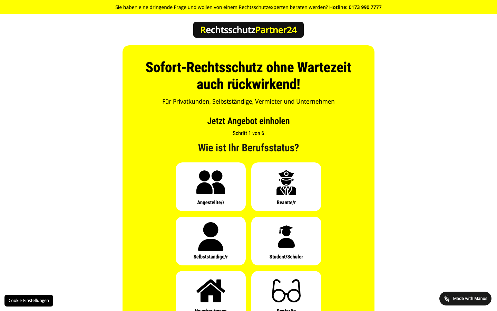
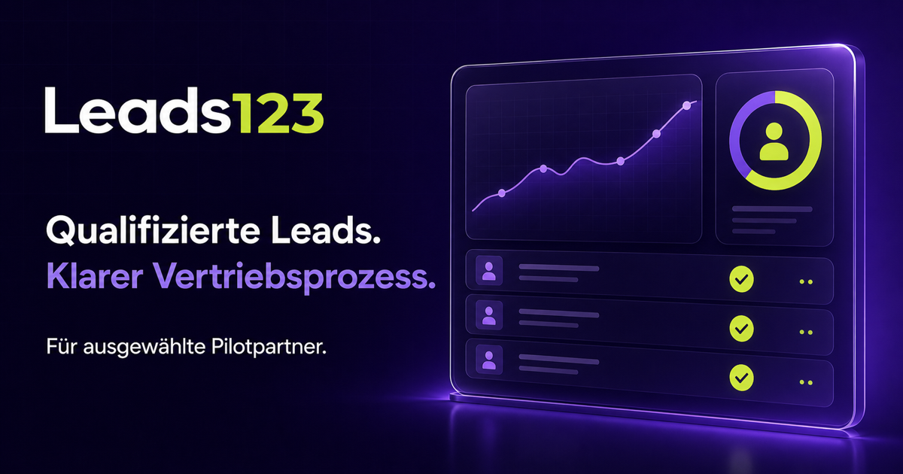
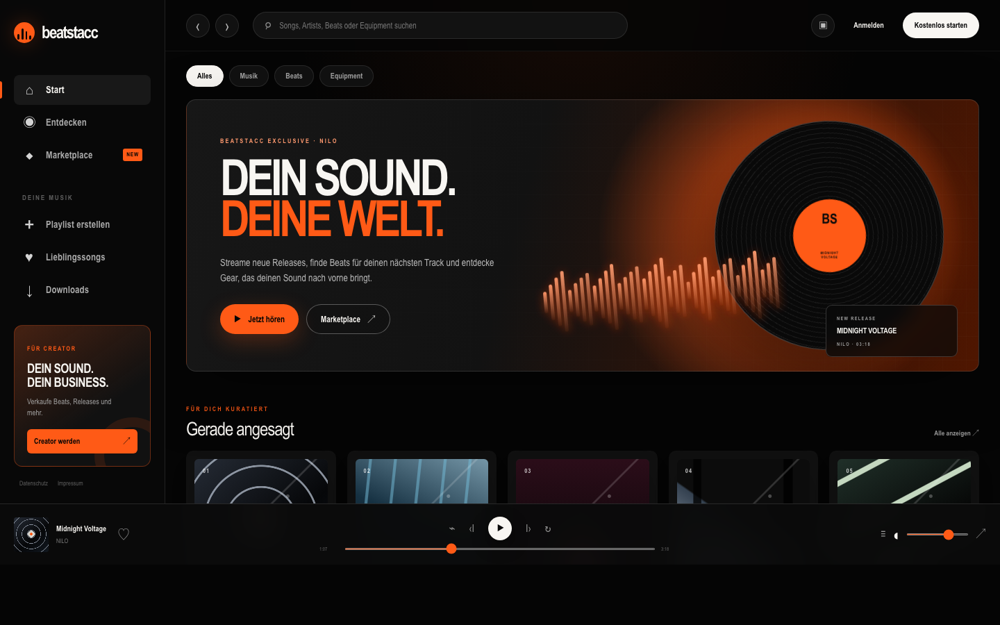

rechtsschutzpartner24.de
↗

Augsburg · Germany
Webdesign & Performance Marketing
PORTFOLIO / 2026
Strategie, Design und Performance aus einer Hand — für Unternehmen, die online nicht nur stattfinden, sondern wachsen wollen.
ProjekteWAS WIR TUN
Webstacc verbindet klare Strategie, charakterstarkes Design und messbares Marketing. Keine Lösungen von der Stange, sondern digitale Auftritte, die exakt zu Unternehmen und Zielgruppe passen.
Aktueller Praxisfokus Kundenprojekte in Webdesign und Google Ads. Alle weiteren Leistungen ergänzen das System rund um Sichtbarkeit und Wachstum.
Eine klare Auswahl realer Auftritte — mit Fokus auf Vertrauen, Conversion und digitale Eigenständigkeit.



Modular buchbar. Strategisch gedacht. Auf ein gemeinsames Ziel ausgerichtet: mehr Relevanz, mehr Anfragen, mehr Wachstum.
Websites und Landingpages, die Interessenten gezielt zur Anfrage führen.
Suchkampagnen mit klarer Struktur und laufender Optimierung auf echte Anfragen.
Technische Basis, lokale Sichtbarkeit und Inhalte, die Menschen wie Suchmaschinen verstehen.
Strategie und Content-Systeme für eine Marke, die sichtbar bleibt.
Vier klare Phasen, ein gemeinsamer Fokus: aus guten Gedanken wird ein Auftritt, der sichtbar arbeitet.
Ziele, Zielgruppe und Ausgangslage werden glasklar.
Aus Erkenntnissen wird eine schlüssige digitale Richtung.
Design, Technik und Kampagnen greifen sauber ineinander.
Wir messen, lernen und verbessern, was bereits funktioniert.
BEREIT FÜR DEN NÄCHSTEN SCHRITT?
Erzähl uns kurz, was du vorhast. Wir melden uns persönlich mit einer ehrlichen Einschätzung und den nächsten sinnvollen Schritten.
Kostenloses Erstgespräch ↗